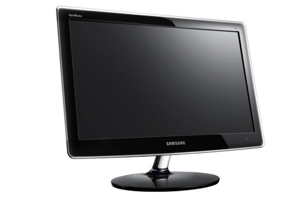
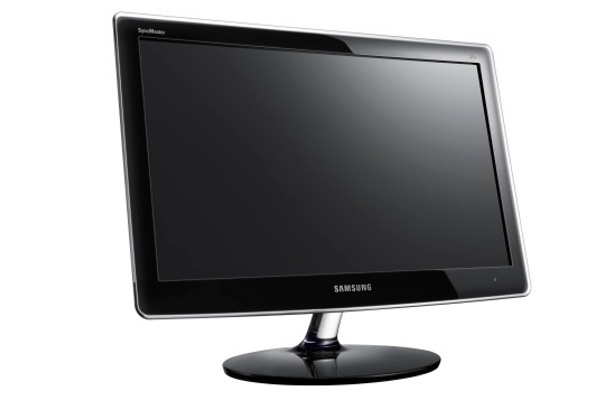

Iniciación a la informática e Internet
El sistema operativo
Windows 7
Apreta la tecla → para avanzar.

¿Qué es el sistema operativo?

Un Sistema operativo (SO) es un software que actúa de interfaz entre los dispositivos de hardware y los programas usados por el usuario para utilizar un computador.
Windows 7 es el sistema operativo que vamos a ver a lo largo del curso.


Cambia de foto con las teclas: ↑ y ↓
¿Qué sistema operativo tengo en mi casa?
- Depende del hardware. Si hemos comprado un PC llevará Windows, si hemos comprado un ordenador Apple llevará MacOSX.
- Depende del la fecha de compra. Si lo hemos comprado del 2008 hacia adelante llevará Windows 7, sino llevará Windows Vista o Windows XP.
Algunos conceptos importantes...
- Sistemas operativos hay muchos. Muchas
versiones de Windows, los MacOSX de Apple, el sistema operativo
libre Linux, etc.
- Windows domina el mercado. El 80% de los
ordenadores lleva Windows.
- Los sistemas operativos se renuevan cada cierto tiempo. Y nos toca aprender las novedades.
- Los conceptos básicos son siempre los mismos.. Si conocemos uno sabremos defendernos con otros.
- En la UJI trabajaremos con Windows 7
Cambiar de Sistema Operativo
¿Conviene cambiar el sistema operativo de mi antiguo ordenador?
- No es recomendable. El cambio de sistema operativo Windows implica la compra de una licencia (de 50 a 150 euros), y un proceso complicado de instalación.
- Conclusión. El cambio de sistema operativo se realiza en conjunto con el cambio de equipo.
Entonces... ¿qué es un sistema operativo?
- Entorno gráfico de usuario. Nos permite
trabajar en un entorno muy cómodo y vistoso.
- Multitarea. Capacidad de hacer muchas cosas al
mismo tiempo (p.e. oir música y navegar por internet).
- Sencillo y usable. Enmascara toda la
complejidad inherente de un sistema informático.
- Nos gestiona todos los dispositivos. La red,
la wifi, los USB, la impresora, etc.


Cambia de foto con las teclas: ↑ y ↓
Arranque
Apreta la tecla → para avanzar.
El arranque del ordenador
En informática, la secuencia de arranque, (boot o booting en inglés) es el proceso que inicia el sistema operativo cuando el usuario enciende una computadora. Se encarga de la inicialización del sistema y de los dispositivos.


Cambia de foto con las teclas: ↑ y ↓
Detalles del proceso de arranque
- Proceso automático y necesario.
- Chequea el correcto funcionamiento de los dispositivos antes de dejarnos trabajar.
- Proceso complejo. Ante un fallo de la secuencia de arranque, consultar con un técnico.
Escritorio
Apreta la tecla → para avanzar.
Elementos del escritorio
¿Qué podemos identificar en el escritorio?
- Fondo de pantalla.
- Iconos. Muchos iconos dispuestos aleatoria u ordenadamente por el escritorio. Nos ayudan a arrancar programas.
- Barra de tareas. Totalmente esencial, nos muestra y permite gestionas las aplicaciones activas.
- Botón del menú Inicio. Acceso central a todas las características del Sistema Operativo.
Interactuando con el ordenador
Ya sabemos que es el Sistema Operativo el que nos hace de intermediador con el ordenador, los dispositivos básicos con las que nos comunicaremos son:
- Ratón.
- Teclado.
- Pantalla.
- Altavoces.
 

Cambia de foto con las teclas: ↑ y ↓
Las aplicaciones
La verdadera razón por la que explicamos todo esto es porque el sistema operativo nos facilita el acceso a las aplicaciones. Veamos qué tipos de aplicaciones tenemos:
- Navegador de Internet.
- Editor de textos.
- Visor y gestor de fotografías.
- Reproductor multimedia.
- Juegos.
- Millones más...